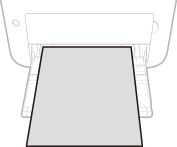
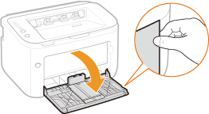
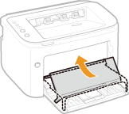
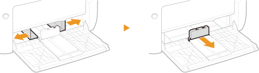
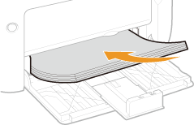
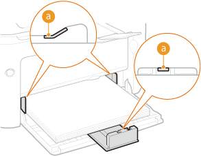
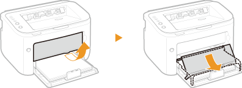

0KXF-00U
Cargue el papel que se utiliza con más frecuencia en la bandeja multiuso. Si desea imprimir con un papel distinto al que está cargado en la bandeja multiuso, cargue el papel en la ranura de alimentación manual. Carga de papel en la ranura de alimentación manual
|
|
|
Cargue siempre el papel en orientación vertical
El papel no puede cargarse en orientación horizontal. Asegúrese de cargar el papel en orientación vertical como muestra la siguiente ilustración.
 |
1
Abra la bandeja multiuso.


Cuando reponga papel
Una vez abierta la bandeja multiuso y la tapa de la bandeja colocada, pliegue la tapa de la bandeja.

2
Separe las guías del papel.
Deslice las guías del papel hacia afuera.

3
Cargue el papel y deslícelo hasta que llegue al fondo.
Cargue el papel en orientación vertical (con el lado corto hacia el equipo) y la cara de impresión hacia arriba. El papel no puede cargarse en orientación horizontal.
Antes de cargarlo, ventile el taco de papel y colóquelo sobre una superficie plana para alinear los lados.

Mantenga el taco de papel dentro de las guías de límite de carga.
Asegúrese de que el taco de papel no supera las guías límite de carga ( ). Si se carga demasiado papel, pueden producirse atascos.
). Si se carga demasiado papel, pueden producirse atascos.
). Si se carga demasiado papel, pueden producirse atascos. 
Para cargar sobres o papel preimpreso, consulte Carga de sobres o Carga de papel preimpreso.
4
Alinee las guías del papel con los lados del papel.
Alinee las guías del papel para que sujeten bien los lados del papel.

Alinee las guías para que sujeten bien el papel
Si las guías del papel están demasiado sueltas o demasiado apretadas, podrían ocurrir errores de alimentación o atascos de papel.
5
Coloque la tapa de la bandeja.

|
|
|
Asegúrese de que no hay papel cargado en la ranura de alimentación manual antes de imprimir desde la bandeja multiuso. Si hay papel cargado tanto en la bandeja multiuso como en la ranura de alimentación manual, se alimentará el papel de la bandeja de alimentación manual.
|
 |
|
Antes de empezar a imprimir, tire hacia afuera de la bandeja auxiliar para que el papel impreso no se caiga de la bandeja de salida.
 Tras volver a cargar papel porque se ha agotado mientras se imprimía, o tras restaurar el papel tras una notificación de error de papel, pulse la tecla
 (Papel) para reanudar la impresión. (Papel) para reanudar la impresión. |
|
Impresión en el reverso del papel impreso (Impresión a doble cara manual)
|
|
Puede imprimir en el reverso del papel impreso. Aplane las arrugas del papel impreso e introdúzcalo en la bandeja multiuso con la cara de impresión hacia arriba (y con la cara impresa hacia abajo).
Cargue solo una hoja de papel cada vez que imprima.
Solo puede utilizar papel que haya sido impreso con este equipo.
No puede imprimir en la cara ya impresa.
|